Touch by touch, 2021
CoCr, stoving enamel
CoCr, stoving enamel
«Touch by touch» is sensuality in metal frame. It is my belief that the most intimate branch of art is jewelry. It exists in the relationship with human body: an orfevrerie adjoints body curves, it is in close contact with the skin. Touch is one of the most important tools to perceive the world and ourselves. Working on the collection, I was eager to create a tactile dialogue. The basic principle of shaping pieces is modeling by touching. Body is an environment for the jewelry pieces and the key moment is to feel the jewels.
Photo: Olga Makarova, Sophie Sherova, Jeanne Dulepova
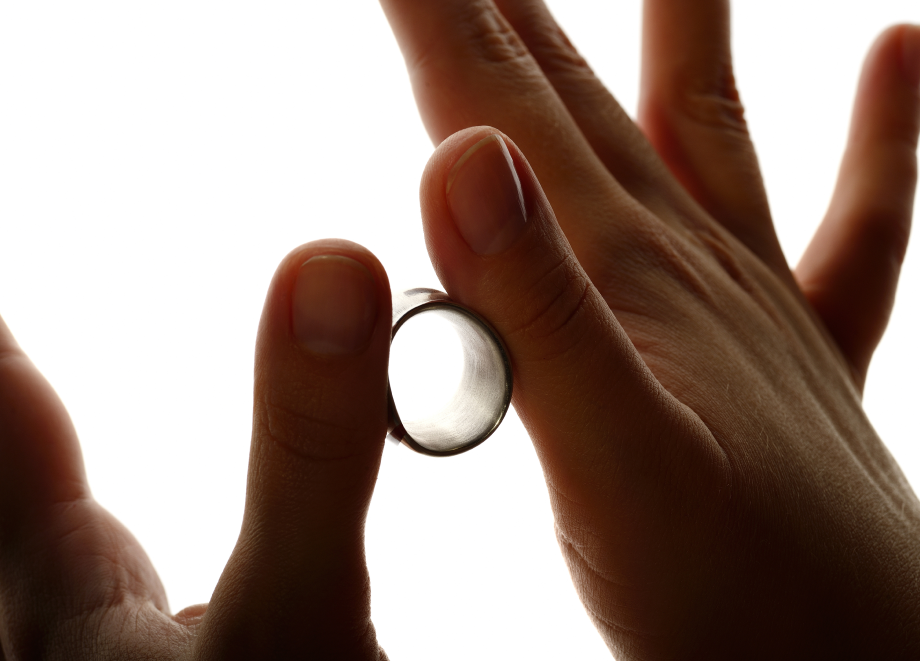
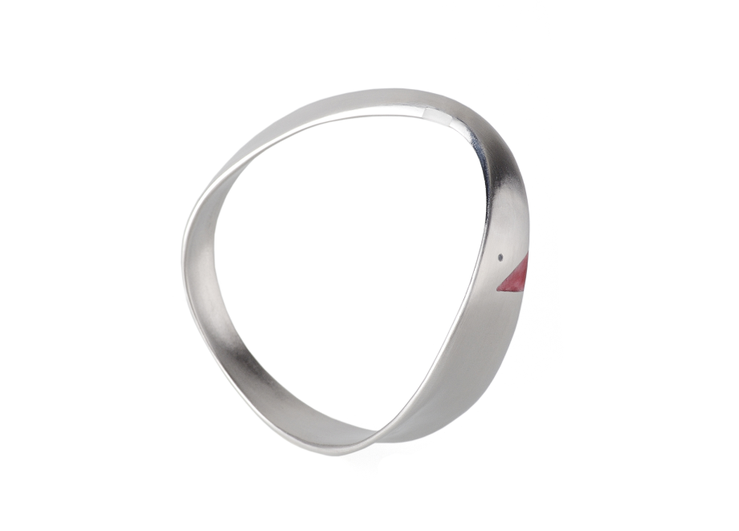
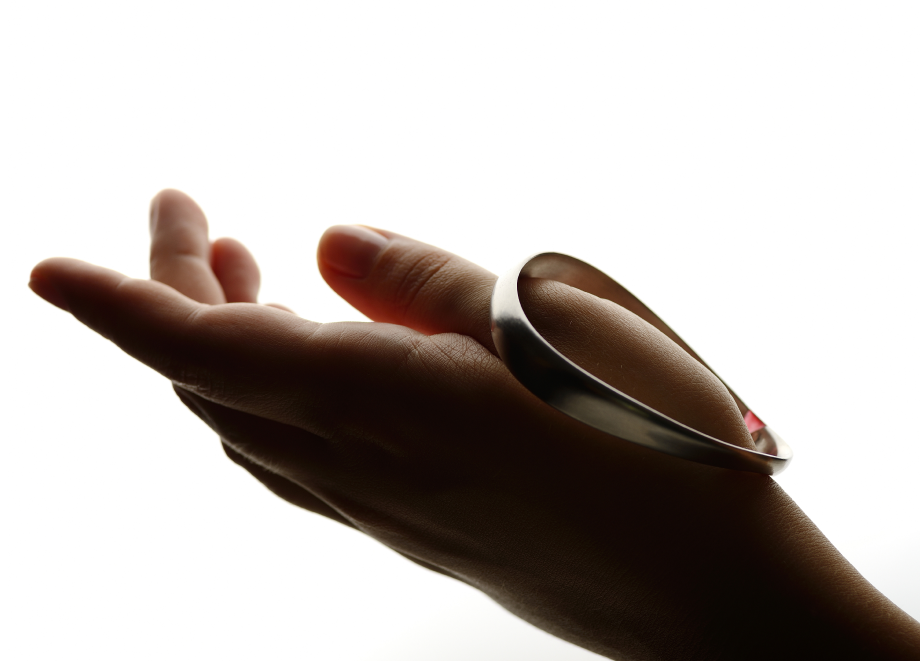
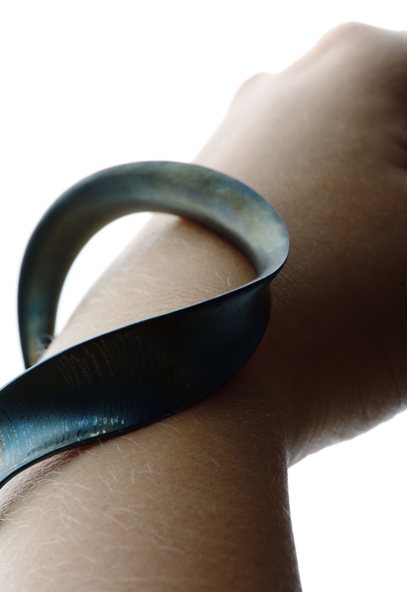
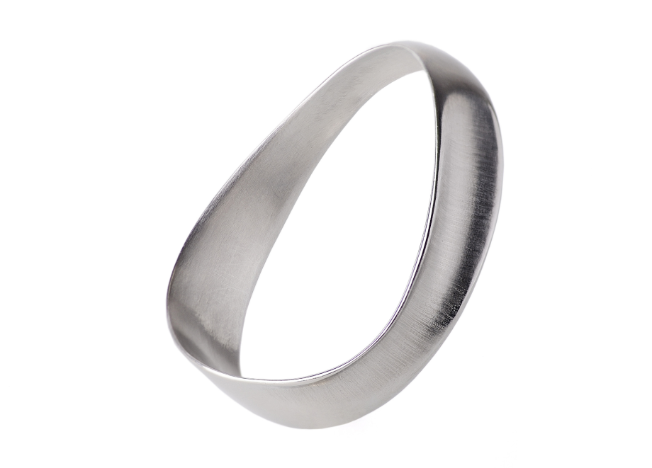
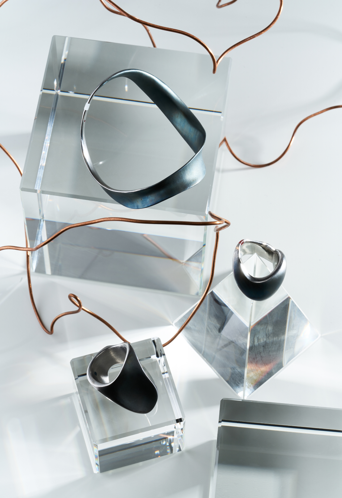
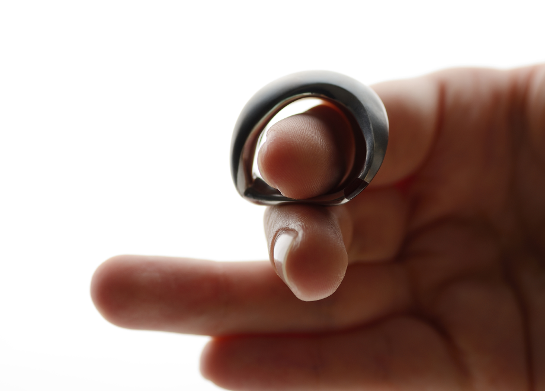
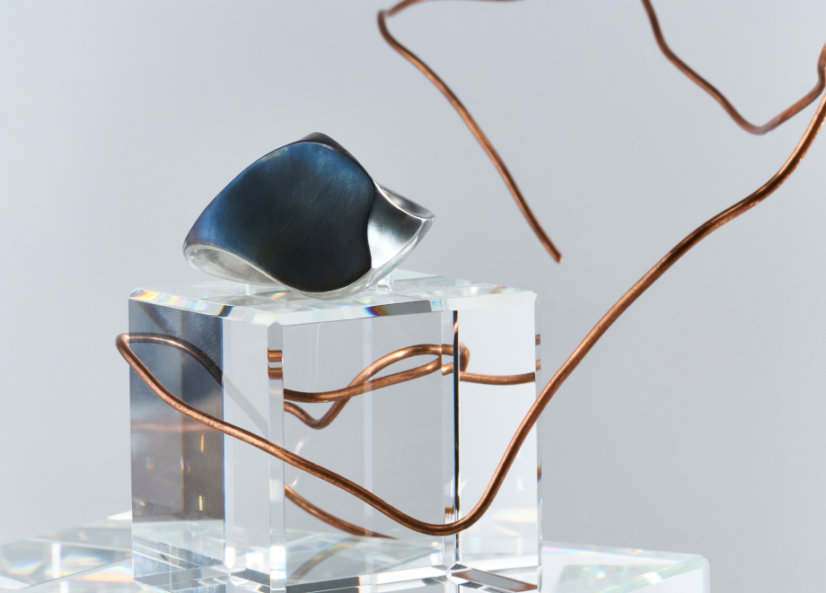
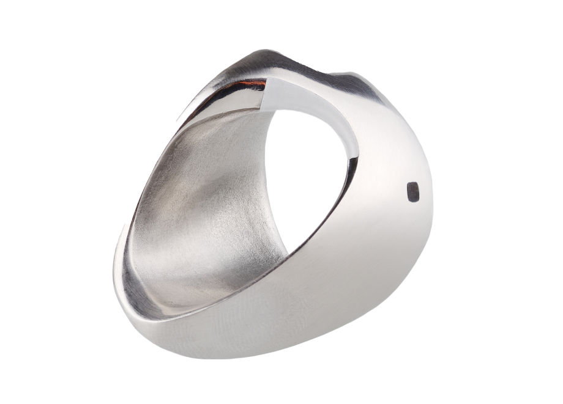
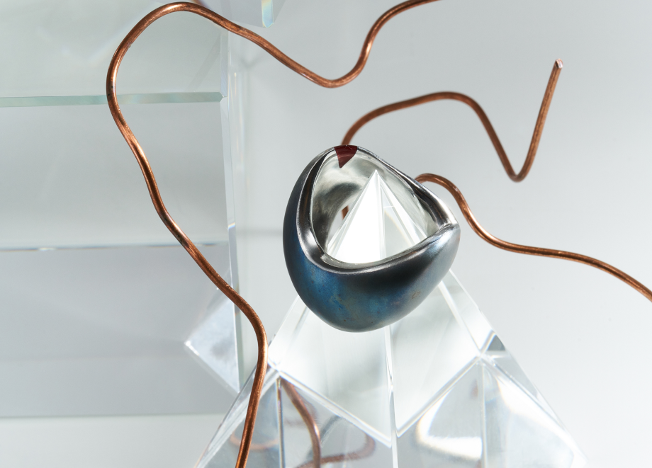
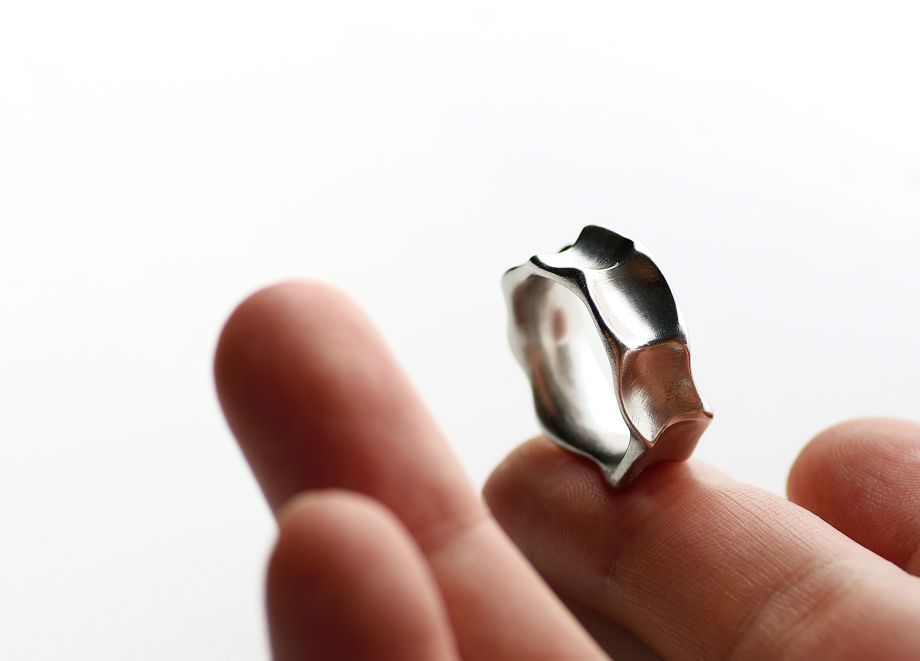
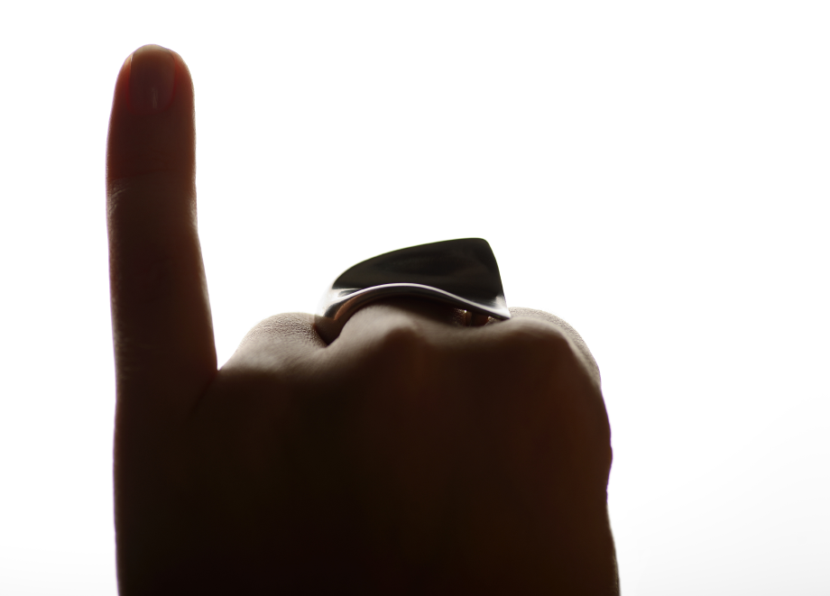
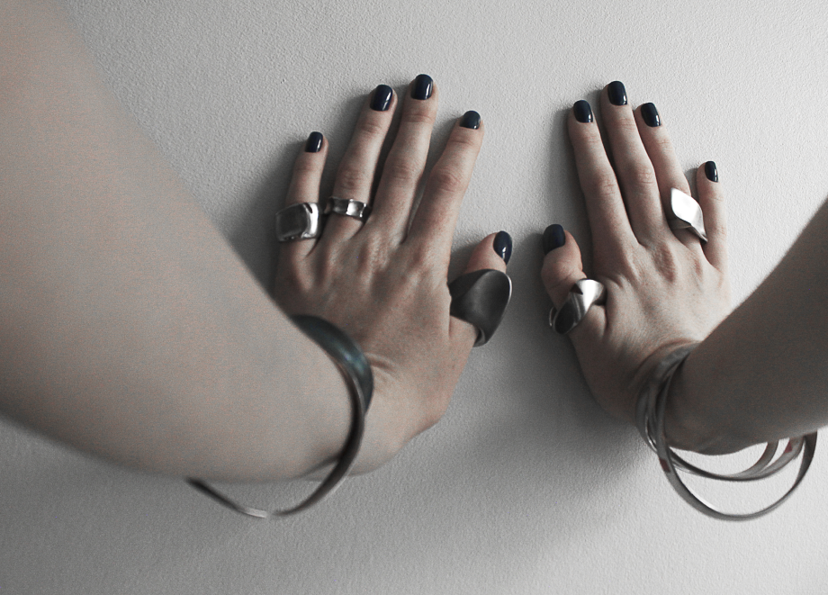